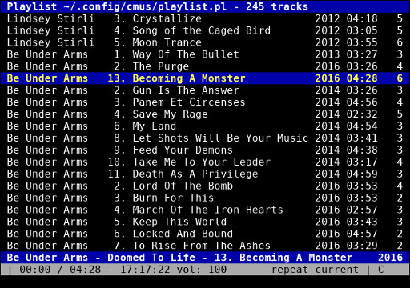
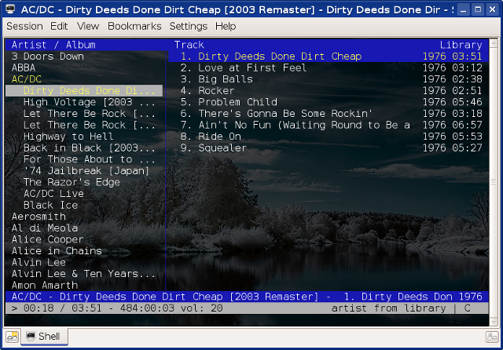
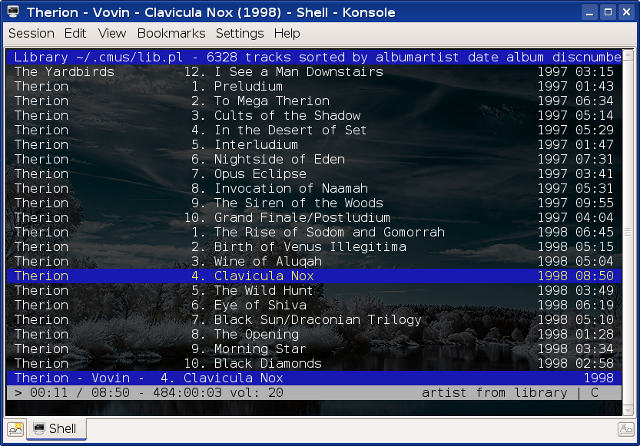
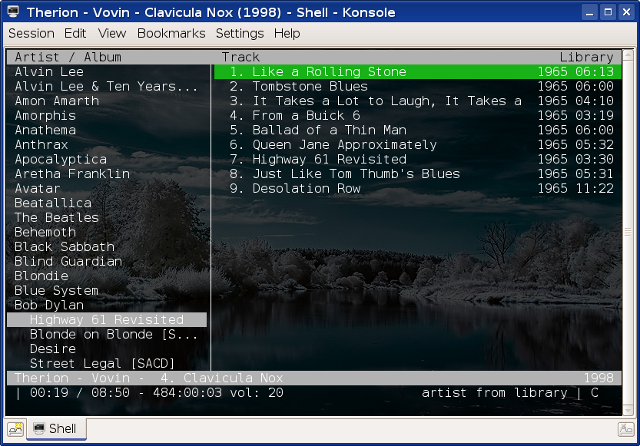

Слушаем музыку из консоли при помоьщю cmus
23 января 2017
Поскольку теперь мы читаем электронную почту из консоли при помощи Mutt и сидим в IRC также из консоли благодаря Irssi, не говоря уже об использовании классики вроде Vim или Git, было бы неплохо обзавестись и консольным аудиоплеером. Соображения те же — удобно все делать хоткеями, одинаковые шрифты и тона для всех приложений, можно переживать перезапуск иксов в screen, и так далее. Консольных аудиоплееров существует много, но рассмотрим мы только один из них, cmus.
Вот как эта штука примерно выглядит:

Примите во внимание, что cmus будет работать из рук вон плохо, если у вас не установлен PulseAudio. Как его установить в используемом мною нынче Arch Linux, описано в заметке Пример настройки десктоп-окружения в Arch Linux.
Основные хоткеи следующие:
Помимо хоткеев есть еще и масса команд. Рассмотрим основные.
Добавить музыку из каталога:
:add ~/data/music/
Очистить плейлист:
:clear
Сохранить плейлист в файл:
:save
:save ~/path/to/file.pls
Открыть плейлист:
:load ~/path/to/file.pls
Более гибкий контоль громкости, в том числе можно делать ее разной на разные уши:
:vol +17%
:vol +5% -5%
:vol 90%
Перемотка:
:seek +1m
:seek -30
:seek 1:33
Отображать оставшееся время вместо текущего:
:set show_remaining_time=true
В общем и целом, cmus — крутейшая штука. Музыку я теперь слушаю только в нем. Если вы о нем не знали или знали, но не пробовали, то крайне рекомендую попробовать. Подробности, как обычно, вы найдете в man cmus.
А в чем вы нынче слушаете музыку?
===========================================
http://rus-linux.net/nlib.php?name=/MyLDP/mm/cmus_review/obzor-konsolnogo-audio-pleera-cmus.html
Руководство по консольному аудиоплееру CMus
Оригинал: Guide to CMus - Music Player for Your Terminal
Автор: Craciun Dan
Дата публикации: 2 февраля 2011 года
Перевод: А. Кривошей
Дата перевода: апрель 2011 года
CMus - это мощный свободный консольный аудиоплеер, использующий библотеку ncurses. CMus поддерживает разные музыкальные форматы файлов, включая Ogg Vorbis, FLAC, MP3, WAV, Musepack, WavPack, WMA, AAC и MP4. Хотя CMus - не единственный плеер для терминала (есть также MOC, Herrie или mp3blaster), я предпочитаю его из-за уникальных клавиатурных сочетаний и мощных функциональных возможностей.
Особенности CMus
Ниже представлены основные возможности CMus:
Использование CMus
Для начала добавим несколько песен в нашу медиа библиотеку. CMus использует команды в стиле Vi, поэтому все они начинаются с двоеточия. Например, чтобы добавить аудио файл в директорию ~/music, используется следующая команда:
Пример вставки короткого отрезка кода или отдельной команды:
$ :add ~/music
Чтобы выйти из CMus, используется команда :q (или клавиша Q).
CMus имеет семь режимов интерфейса, которые переключаются с помощью клавиш 1-7:
Режим библиотеки
Два режима, которые обычно используются чаще всего, это первый и второй. Для начала посмотрим на первый:

На левой вкладке отображаются исполнители и их альбомы. Для перемещения используются клавиши со стрелками вверх/вниз или J и K. Чтобы развернуть пункт в древовидную структуру, используется пробел. При выделении альбома его треки отображаются на правой вкладке. Переключившись между вкладками с помощью клавиши TAB, можно запустить воспроизведение текущей песни клавишей Enter. Еще несколько полезных клавиш:
TAB - переключение между вкладками
X - запуск воспроизведения
V - остановка воспроизведения
C - пауза
- уменьшение громкости на 10%
+ увеличение громкости на 10%
Режим сортированной библиотеки
Второй режим (сортированная библиотека) позволяет быстро перемещаться между треками, нажав клавишу / (слэш) и слово или несколько символов из названия трека, который вы хотите найти. Дважды нажмите Enter для воспроизведения песни или N для поиска следующего совпадения.

Команды и клавиатурные сочетания CMus
Используя стиль Vi, CMus позволяет вводить команды, начинающиеся с двоеточия, и поддерживает автодополнение по TAB. Ниже приведены некоторые полезные команды (полный список доступен в режиме 7 или в man-странице программы):
Использование тем (цветовых схем)
CMus поддерживает несколько цветовых схем, которые включаются с помощью команды :colorscheme. Например, :colorscheme xterm-white выглядит так:

Активация подписок Last.fm и Libre.fm
Хотя CMus по умолчанию не включает возможности подключаться к Last.fm, на официальном сайте программы выложены несколько скриптов, которые позволяют легко сделать это. В нашем примере рассмотрим скрипт на Perl, который доступен здесь под именем post-fm. Во-первых, скачайте отсюда скрипт и скопируйте его в вашу директорию ~/.cmus, затем откройте его в текстовом редакторе, чтобы добавить свои логин и пароль на Last.fm. Вставьте ниже свои логин и пароль:
our %rc = (
login => "ваш_логин",
password => "ваш_пароль",
Далее, сделайте скрипт исполняемым:
$ chmod 755 ~/.cmus/post-fm
Теперь можно его активировать. Последняя версия CMus имеет команду :set status-display-program, позволяющую задать скрипт, спомощью которого вы хотите прослушивать треки. Для включения скрипта введите следующую команду:
:set status-display-program=~/.cmus/post-fm
Теперь ваша подписка должна быть активирована. Для Libre.fm необходимо раскомментировать строку # host => 'turtle.libre.fm',, и ниже вводить имя пользователя и пароль.
Компиляция и установка CMus в Debian 5.0 Lenny
Во-первых, установите необходимые зависимости:
$ apt-get build-dep cmus
Скачайте архив с исходным кодом с официального веб-сайта и распакуйте его:
$ tar -xjf cmus-v2.3.3.tar.bz2
Теперь компилируем и устанавливаем:
$ ./configure
$ make
$ make install
последнюю команду необходимо выполнять от имени root, либо можно задать соответствующий префикс и устанавливать программу как обычный пользователь:
$ ./configure --prefix=/home/USER/usr
$ make
$ make install
В этом случае необходимо убедиться, что путь /home/USER/usr/bin есть в вашей переменной $PATH.
====================================
=====================================
https://www.tecmint.com/install-cmus-music-player-in-linux/
CMUS (C * Music Player) - Консольный аудиоплеер для Linux
Рави Сэйв | Опубликовано: 28 мая 2013 г. | Последнее обновление: 7 января 2015 г.
Загрузите ваши бесплатные электронные книги СЕЙЧАС - 10 бесплатных электронных книг для Linux для администраторов | 4 бесплатные книги сценариев оболочки
CMus - это легкий, быстрый и мощный терминальный аудиоплеер с открытым исходным кодом для Unix / Linux- подобных операционных систем. Он был выпущен и распространен под лицензией GNU General Public License ( GPL ) и работает исключительно через пользовательский интерфейс на основе терминала.
CMus был разработан для работы в текстовом пользовательском интерфейсе, что уменьшает ресурсы, необходимые для запуска приложения на старых компьютерах, а также в системах, где система X Window недоступна.
Приложение CMus было первоначально разработано Тимо Хирвоненом , но он прекратил разработку примерно в 2008 году . Позже он был назван « cmus-неофициальный », а затем перешел к SourceForge в ноябре 2008 года . В феврале 2010 года он был объединен с официальным проектом под названием « cmus ».
Особенности Cmus
Установка CMUS Audio Player на Ubuntu / Debian и Linux Mint
Чтобы установить музыкальный проигрыватель CMus , откройте окно терминала, нажав « Ctrl + Alt + T » на рабочем столе, и выполните следующую команду, чтобы установить его.
$ sudo apt-get install cmus
Пример вывода
[sudo] пароль для tecmint:
Чтение списков пакетов ... Готово
Построение дерева зависимостей
Чтение информации о состоянии ... Готово
Следующие пакеты были установлены автоматически и больше не требуются:
java-упаковщики libjs-cropper libjs-прототип libjs-scriptaculous libphp-phpmailer libphp-snoopy tinymce
Используйте «apt-get autoremove», чтобы удалить их.
Будут установлены следующие дополнительные пакеты:
cmus-plugin-ffmpeg libao-common libao4
Предлагаемые пакеты:
libesd0 libesd-alsa0
Будут установлены следующие НОВЫЕ пакеты:
cmus cmus-plugin-ffmpeg libao-common libao4
0 обновлено, 4 вновь установлено, 0 для удаления и 36 не обновлено.
Необходимо получить 282 КБ архивов.
После этой операции будет использовано 822 кБ дополнительного дискового пространства.
Вы хотите продолжить [Да / Нет]? Y
Получить: 1 http://in.archive.ubuntu.com/ubuntu/ raring / main libao-common all 1.1.0-2ubuntu1 [6610 B]
Получить: 2 http://in.archive.ubuntu.com/ubuntu/ raring / main libao4 i386 1.1.0-2ubuntu1 [37,7 кБ]
Получить: 3 http://in.archive.ubuntu.com/ubuntu/ raring / universe cmus i386 2.5.0-1 [228 кБ]
Получить: 4 http://in.archive.ubuntu.com/ubuntu/ raring / universe cmus-plugin-ffmpeg i386 2.5.0-1 [9,094 B]
Получено 282 кБ за 18 секунд (15,5 кБ / с)
Выбор ранее невыбранного пакета libao-common.
(Чтение базы данных ... 218196 файлов и каталогов, установленных в настоящее время.)
Распаковка libao-common (из ... / libao-common_1.1.0-2ubuntu1_all.deb) ...
Выбор ранее невыбранного пакета libao4: i386.
Распаковка libao4: i386 (из ... / libao4_1.1.0-2ubuntu1_i386.deb) ...
Выбор ранее невыбранной упаковки cmus.
Распаковка cmus (из ... / archives / cmus_2.5.0-1_i386.deb) ...
Выбор ранее невыбранного пакета cmus-plugin-ffmpeg.
Распаковка cmus-plugin-ffmpeg (из ... / cmus-plugin-ffmpeg_2.5.0-1_i386.deb) ...
Обработка триггеров для man-db ...
Настройка libao-common (1.1.0-2ubuntu1) ...
Настройка libao4: i386 (1.1.0-2ubuntu1) ...
Настройка cmus (2.5.0-1) ...
Настройка cmus-plugin-ffmpeg (2.5.0-1) ...
Обработка триггеров для libc-bin ...
Теперь выполняется отложенная обработка ldconfig
Если ваш менеджер пакетов не предоставляет обновленную версию cmus , вы можете получить ее из репозитория добавления в вашей системе.
$ sudo add-apt-repository ppa: jmuc / cmus
$ sudo apt-get update
$ sudo apt-get install cmus
Установка CMUS Audio Player на RHEL / CentOS и Fedora
Аудиоплеер CMus может быть установлен в системе на базе Red Hat с использованием стороннего репозитория. Итак, давайте установим и включим репозиторий RPMForge в ваших системах. После того, как вы включили rpmforge в своей системе, вы можете выполнить установку, используя следующую ' команду yum '.
# yum install cmus
Пример вывода
Загруженные плагины: fastestmirror
Загрузка скоростей зеркала из кэшированного хост-файла
* база: centos-hcm.viettelidc.com.vn
* rpmforge: be.mirror.eurid.eu
* обновления: mirrors.digipower.vn
rpmforge | 1,9 кБ 00:00
rpmforge / primary_db | 2,7 МБ 00:53
Настройка процесса установки
Разрешение зависимостей
-> Выполнение проверки транзакции
---> Будет установлен пакет cmus.i686 0: 2.4.1-1.el6.rf
Решенные зависимости
================================================== ===========================================
Размер архива версии архива пакета
================================================== ===========================================
Установка:
cmus i686 2.4.1-1.el6.rf rpmforge 294 k
Сводка транзакций
================================================== ===========================================
Установить 1 пакет (ов)
Общий объем скачиваемых файлов: 1,0 М
Установленный размер: 2 М
Это нормально [y / N]: y
Загрузка пакетов:
(1/1): cmus-2.4.1-1.el6.rf.i686.rpm 294 кБ 00:13
Установка: cmus-2.4.1-1.el6.rf.i686 23/23
Проверка: cmus-2.4.1-1.el6.rf.i686 17/23
Установлены:
cmus.i686 0: 2.4.1-1.el6.rf
Complete!
Начиная CMus
Чтобы запустить первый раз, просто наберите « cmus» в терминале и нажмите « Enter ». Он запустится и откроет вид альбома / исполнителя, который выглядит примерно так.
$ sudo cmus
Запустите CMUS Music Player
Добавление музыки в CMus
Откройте окно просмотра файлов, нажав « 5 », и добавьте музыку. По мнению должно быть что-то похожее на это.
Добавить треки в CMus Music Player
С помощью клавиш со стрелками выберите папку и нажмите « Enter », чтобы перейти к папке, в которой вы сохранили все аудиофайлы. Чтобы добавить аудиофайлы в свою библиотеку, используйте клавиши со стрелками, чтобы выбрать файл или папку, и нажмите клавишу « а », чтобы перейти к следующей строке (так что легко добавить много файлов / папок). Итак, начните добавлять файлы или папки, нажав « а » на вашей библиотеке. После добавления музыкальных файлов сохраните их, введя « : save » в командной строке cmus и нажмите « Enter ».
Добавление треков в CMus Music Player
Воспроизведение треков из библиотеки CMus
Для воспроизведения трека просто введите « 2 », чтобы получить вид библиотеки. Вы получите нечто похожее на это.
Воспроизведение треков в CMus Player
Используйте клавиши « вверх » и « вниз », чтобы выбрать трек, который вы хотите воспроизвести, и нажмите « Enter ».
Используйте клавиши со стрелками « вверх » и « вниз », чтобы выбрать трек, который вы хотите услышать, и нажмите « Enter », чтобы воспроизвести его.
Некоторые клавиши CMus для управления Play
Нажмите * c *, чтобы приостановить / отменить
Нажмите вправо / влево, чтобы искать на 10 секунд
Нажмите * <* / *> * поиск на одну минуту
Нажмите « r », чтобы повторить трек
Нажмите « s » в случайном порядке, чтобы воспроизвести все дорожки.
Управление очередью
Предположим, вы слушаете песню и хотите воспроизвести следующую песню по вашему выбору, не прерывая текущий исполняемый трек. Просто перейдите к треку, который вы хотите воспроизвести следующим, и введите « e ».
Чтобы просмотреть / отредактировать очередь , нажмите « 4 », и ваше представление очереди должно выглядеть как простое представление библиотеки.
Добавить треки в очередь CMus
Если вы хотите изменить порядок дорожек, вы можете нажать « p ». Чтобы удалить дорожку из списка очередей, просто используйте «* shift-D ».
Плейлист
Режим списка воспроизведения на « 3 », но прежде чем перейти к просмотру списка воспроизведения, давайте добавим несколько песен. Нажмите « 2 », чтобы получить вид библиотеки, перейдите к нужной дорожке и нажмите « y », чтобы добавить ее. Теперь введите « 3 », чтобы перейти к вновь созданному плейлисту.
Добавить треки в CMus Playlist
Аналогично виду очереди, где вы можете использовать клавиши « p » и « d » для перемещения и удаления песен из списка воспроизведения.
Поиск трека
Для поиска дорожки перейдите в вид библиотеки, нажав « 2 », а затем нажмите « / », чтобы начать поиск. Введите название трека, который вы ищете. CMus начнет поиск треков, в которых есть все эти слова. Нажмите « Enter », чтобы выйти из режима поиска, и нажмите « n », чтобы найти следующее совпадение.
Поиск треков в CMus Player
Настройка CMus
Как я уже сказал, в Cmus есть куча очень крутых настроек, таких как изменение номеров треков, включение поддержки воспроизведения или изменение сочетаний клавиш. Для быстрого просмотра текущих сочетаний клавиш и настроек нажмите « 7 » и для изменения настроек или использования связывания клавиш (клавиши вверх / вниз ) и нажмите « Ввод ».
Изменить сочетания клавиш и настройки
Выйти из CMus
Когда вы закончите, нажмите « : q » и нажмите « Enter », чтобы выйти. Это сохранит всю вашу библиотеку, настройки, список воспроизведения и очередь.
Дальнейшее чтение
Приложение CMus поставляется с отличным справочным руководством. Здесь я не рассмотрел большинство функций и команд, таких как « загрузка » и « сохранение » списков воспроизведения, удаленное управление и управление cmus с помощью команды « cmus-remote » и т. Д. Для получения дополнительных команд и параметров используйте * man cmus * в терминале или прочитайте следующая справочная страница.
Поделиться